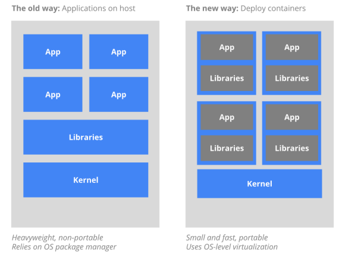

Introducción
La virtualización es una técnica que permite la emulación de algún recurso tecnológico.
Máquina virtual
Virtualización de un entorno de ejecución para la ejecución de aplicaciones.
Virtualización del hardware
Virtualización de un hardware completo en el que se puede ejecutar un sistema operativo como si ejecutara sobre HW real.
Sistemas virtualizados
Distinguimos dos sitema operativo
- HOST: es el sistema operativo que se arranca en el HW físico.
- GUEST: es el sistema operativo que se ejecuta sobre el HW virtualizado
La virtualización se permite gracias al hypervisor, también llamado gestor de máquinas virtuales, virtual machine manager (VMM).
Un hypervisor es un software que permite la ejecución de múltiples sistemas operativos guest sobre el sistema operativo host.
Ventajas:
- Ejecución de un sistema operativo diferente al instalado
- Posibilidad de clonar y mover la máquina virtual de un ordenador físico a otro
Inconvenientes: penalización en rendimiento
Gestión de sistemas virtualizados
- Pausarse
- Reanudarse
- Crearse “instantáneas”
Desarrollo
Configuramos una máquina virtual equivalente a la que se usará en producción que nos permite compartir entorno entre desarrolladores y un mismo desarrollador puede tener accesible diferentes entornos para diferentes proyectos. Podemos crear instantánea que vuelve a un punto anterior.
Computación en la nube
La prestación de servicios en los preveedores de alojamient en Internet, que son empresas de alojamiento que alquilan recursos de computación. Nos permite la elasticidad de los recursos, el uso de recursos es dinámico, si necesita más recursos hardware, podemos adquirir, se suele cobrar por tiempo de uso de los recursos.
Infraestructura como servicio (laaS)
- Servidores (instances)
- Balanceadores de carga (load balancer)
- Gestión de imágenes (images)
- Copias se seguridad de servidores
- Almacenamiento de datos
- Direcciones IP
- Servidores DNS
Plataforma como servicio (PaaS)
- La plataforma está diseñada para ser escalable de forma automática (sin intervención del desarrollador/administrador)
- Dependiendo del proveedor existen plataformas para las tecnologías mas usadas: Java, PHP, Ruby, .NET..
- La plataforma ofrece servicios adicionales como un servicio: Bases de datos, servidor de correo, bus de comunicaciones, etc…
Software como Servicio (SaaS)
- El usuario no instala el software, lo usa vía web
- Generalmente se paga por uso o por número de usuarios
Nube privada
Existen diferentes tecnologías que lo permiten instalar nubes privadas para controlar un data center.
Ofrecen APIs REST compatibles con los proveedores
Contenedores
Los contenedores son una tecnología que ofrece unas ventajas similares a las VMs pero aprovechando mejor los recursos. Para ejecutar un contenedor no se necesita hypervisor, El contenedor es ejecutado directamente por el kernel del host como si fuera una app más pero de forma aislada del resto

Relación con Mircroservicios
Las aplicaciones monolíticas son cada vez más grandes, más complejas y
soportan más carga, y ahora están dando paso a microservicios, más
elásticas y manejables. Cada equipo de desarrollo implementa y opera
un
microservicio independiente y reutilizable. Los contenedores
están acelerando la adopción porque cada microservicio se ejecuta como
uno o varios contenedores. La organización de contenedores y
servidores físicos tratan como una única app
Vagrant
Vagrant es una herramienta pensada para desarrolladores que quieren configurar y compartir el entorno de trabajo (desarrollo) o despliegue de su aplicación
Docker
Docker es una tecnología que ofrece la containerization.